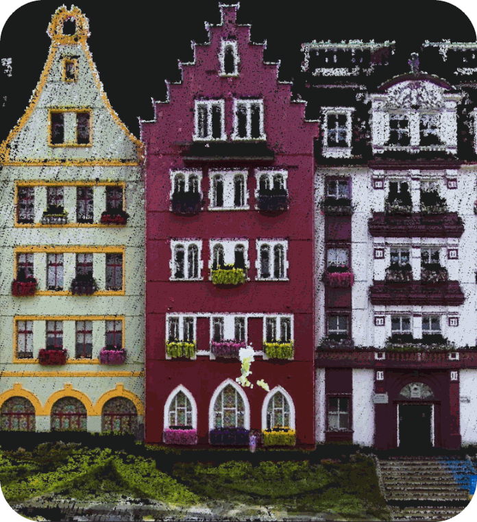
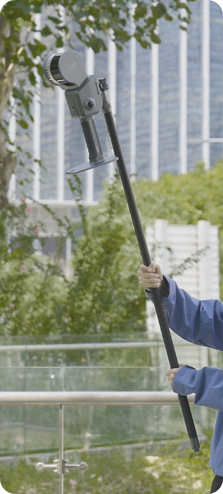
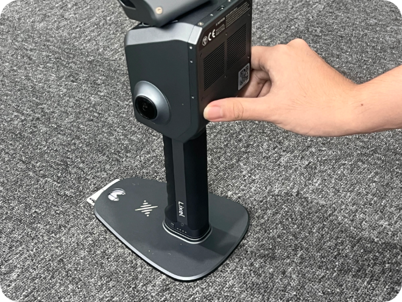
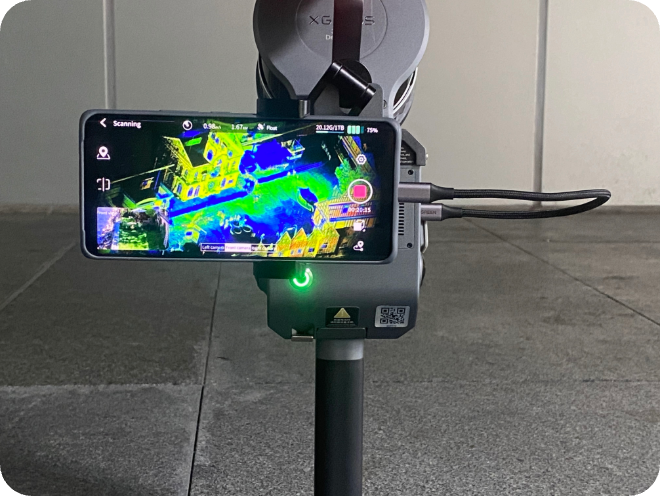

Lixel L2 Pro — Precision Redefined
The Lixel L2 Pro pairs a rotating LiDAR scanner with a dual 48MP panoramic camera and multi-SLAM technology, capturing up to 640,000 points per second at ranges up to 300m — built for large-scale infrastructure, topography and corridor mapping.

Lixel L2 Pro
Handheld SLAM LiDAR Scanner · XGRIDS
1.7 kg · IP54 Aluminium BodySurvey-Grade Mapping at Scale
The Lixel L2 Pro is available in 16-channel (320,000 pts/s, 120m range) and 32-channel (640,000 pts/s, 120m or 300m range) configurations. Point densities reach up to 1 million points per square metre at 1mm spacing, with absolute accuracy of 3cm — even with RTK signal disconnected for trajectories under 100m.
Housed in an IP54 industrial aluminium body with a 1TB built-in SSD, the L2 Pro is engineered for demanding infrastructure, topography and construction surveying. The LixelGo app enables one-screen, one-click operation in the field, while LixelStudio 3.0 handles full point-cloud registration and export on the desktop.
High-resolution colourisation of point clouds
Choose point density and range to match the project
No card swaps during long survey days
Built for demanding field conditions
Key Benefits
Up to 1 million points/m² at 1mm spacing for engineering-grade detail.
300m range configuration covers large infrastructure corridors efficiently.
Maintains 3cm absolute accuracy even if RTK signal drops mid-survey.
Sentra provides demos, training and after-sales support as official reseller.
Fully Integrated and Deeply Optimized
Rotating LiDAR
16 or 32-channel rotating LiDAR scanner captures dense spatial data at up to 640,000 points per second.
Dual 48MP Panoramic Vision
High-resolution stereo cameras deliver photoreal colourisation — no external cameras needed.
High-Precision 6DOF IMU
Six-degree-of-freedom inertial measurement unit for precise orientation and motion tracking.
Multi-SLAM Joint Optimization
LiDAR, visual and inertial SLAM fused and optimized together — maximizing performance in every environment.
The Lixel L2 Pro, In the Field
The Real-Time Coloring Effect Rivals Post-Processing Quality
L2 Real-time output
L2 Pro New Real-time output
1 RTK disconnection <100m. 2 RTK disconnection <100m. 3 Distance between two points is less than 100m.

Real-Time Data with Absolute Coordinates
The LixelUpSample™ algorithm generates photo-quality colour point clouds — dense, detailed, and survey-ready in real time.
Point Density
1 million points per square metre with 1mm spacing for dense point clouds, capturing every detail with precision.
Point Cloud Thickness
Ultra-thin point clouds for more accurate mapping and line drawing — within 10m of the walking path.5
Ultra-High Coloring Accuracy
Dual 48MP cameras deliver photo-quality colour point clouds with precise texture mapping.
Reliable SLAM for Complex Environments
Exclusive Multi-SLAM algorithm enhances adaptability and reliability in challenging environments.
Indoor & Underground
Provides continuous absolute coordinates in satellite-signal-limited areas like interiors, basements and underground spaces.6
Subways & Tunnels
Ensures stable mapping in degraded environments such as subways, tunnels and long corridors.
A Seamless, User-Friendly, and Reliable Workflow
Precision Verification Report
Generate accuracy verification reports directly from the scan — document quality assurance for every project.
Direct Phone Connection
Connect your smartphone via LixelGo for live preview, one-click operation and real-time quality monitoring.
One-Click GCP Marking
Streamlined ground control point marking process — maximize usability and flexibility in the field.
What Makes the Lixel L2 Pro Different

Rotating LiDAR Scanner
16 or 32-channel rotating LiDAR delivers up to 640,000 points per second across 120m or 300m range.

Dual 48MP Panoramic Camera
High-resolution imagery for accurate colourisation and texture mapping of every point cloud.

Multi-SLAM Technology
High-precision IMU fused with multi-SLAM tracking maintains accuracy through complex environments.
1TB Built-in SSD
Ample onboard storage for full-day survey sessions without media swaps.
LixelGo One-Screen Operation
One-click field operation via the LixelGo mobile app — no separate controller needed.
LixelStudio 3.0 Processing
Full point-cloud registration, classification and export to LAS, LAZ, E57, PLY and 3D Gaussian Splat.
Where the Lixel L2 Pro Excels
Infrastructure & Corridor Mapping
Long-range scanning of roads, rail and utility corridors with survey-grade accuracy.
Topographic Surveying
High-density terrain capture for earthworks, cut/fill analysis and site planning.
Construction Progress Monitoring
Repeatable, precise scans to track construction progress against BIM models.
Large-Scale Industrial Sites
Efficient capture of expansive plant, port and industrial facility layouts.
Lixel L2 Pro Specifications
| Configurations | 16-channel: 320,000 pts/s, 120m range · 32-channel: 640,000 pts/s, 120m or 300m range |
|---|---|
| Point Density | Up to 1,000,000 points/m² at 1mm spacing |
| Accuracy | Absolute 3cm (trajectory <100m, RTK disconnected) · Relative 2cm within 100m |
| Camera | Dual 48MP panoramic camera |
| Sensors | Rotating LiDAR + high-precision IMU + multi-SLAM |
| Weight | 1.7 kg |
| Enclosure | IP54 industrial aluminium body |
| Storage | 1TB built-in SSD |
| Output Formats | LAS, LAZ, E57, PLY, 3D Gaussian Splat |
| Software | LixelGo (mobile) · LixelStudio 3.0 (desktop) |
4 WGS84 and CGCS2000 supported. 5 Point cloud thickness within 10m of the walking path. 6 RTK disconnection <100m.
Need the full technical datasheet?
Download the complete Lixel L2 Pro brochure
Maximize Usability and Flexibility

Extension Pole
Reach elevated vantage points for overhead captures in large interiors and infrastructure.

RTK Module
Built-in RTK for centimetre-level absolute positioning — RTK and PPK supported.
Integrated
Phone Mount
Securely attach your smartphone for live LixelGo app monitoring during scan sessions.
Supporting Harness
Ergonomic harness for extended field sessions — distributes weight for all-day comfort.
Drone Mount
Aerial scanning capability — mount the L2 Pro on compatible drone platforms for large-area capture.
Specs AvailableVehicle Mount
Vehicle-based mobile mapping — cover long corridors and road networks efficiently.
Specs AvailableGot Questions About the Lixel L2 Pro?
Can't find what you're looking for? Contact our team — we're happy to help.
The 16-channel captures 320,000 points/sec with a 120m range. The 32-channel doubles the point rate to 640,000 points/sec and is available with either a 120m or extended 300m range.
No — the L2 Pro maintains 3cm absolute accuracy even with RTK disconnected, for trajectories under 100m, thanks to its multi-SLAM fusion.
Large-scale infrastructure, topographic and construction surveying projects that need long-range coverage and high point density in a single handheld device.
The LixelGo mobile app for one-click field operation, and LixelStudio 3.0 desktop software for full point-cloud registration, classification and export.